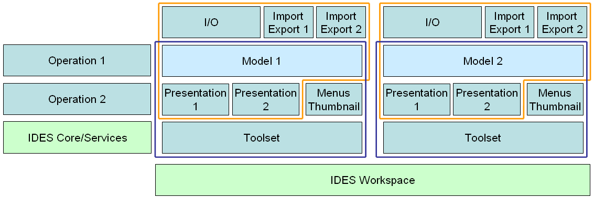

Figure 1. A high-level graph of the structure of IDES. The modules "IDES Core/Services" and "IDES Workspace" provide the infrastructure for the rest of the modules that implement specific DES models. The plugin API supports the introduction of custom versions of all such modules.
The main purpose of IDES is to provide the infrastructure for the presentation and manipulation of DES models.All DES models must be implemented as separate modules on top of this infrastructure. The following types of plugins can be developed:
As one can observe, when introducing a new type of DES model, it will be necessary not only to implement the mathematical representation of the model, but also to create the presentations to show and manipulate the model, as well as the I/O module for this type of model.
Creating plugins for DES operations, or for the import/export of a type of DES model is less demanding, as they rely on an already existing implementation of such models.
Here we will go through the steps to create a simple plugin implementing a DES operation. Before you start, make sure that you have access to the API documentation for IDES plugins, as this guide does not describe all aspects of the API in detail and you will need to refer to the API documentation. The documentation can be obtained from the IDES website.
Writing a plugin for IDES does not require any special setup procedure, beyond including the API jar file in the Java classpath. (Note: The API file for IDES3 is "IDES[version]api.jar" and can be downloaded from the IDES website.) In Eclipse, one needs to create a new Java project and then include the jar file in the "Java Build Path". To do that, go to Project->Properties->Java Build Path and select the "Libraries" tab. Then, add the jar file to the list of libraries.
Now, it is necessary to create the main class of the plugin. It is necessary to implement the ides.api.plugin.Plugin interface. Let’s call the class HelloPlugin.
import ides.api.plugin.Plugin;
import ides.api.plugin.PluginInitException;
public class HelloPlugin implements Plugin {
public String getCredits() {
return "Joe";
}
public String getDescription() {
return "test plugin";
}
public String getLicense() {
return "";
}
public String getName() {
return "Hello Plugin";
}
public String getVersion() {
return "1";
}
public void initialize() throws PluginInitException {
}
public void unload() {
}
}
This code is the bare minimum required for an IDES plugin. Before we add any code that actually does anything, let’s see how to package the plugin so that IDES can load it. To do that, one needs to take a few steps.
First, compile the code (Eclipse does this automatically).
Second, add all the compiled code into a jar file, whose name corresponds to the fully qualified name of the main plugin class (the one which implements ides.api.plugin.Plugin). In our case, the jar file has to be called "HelloPlugin.jar". (Note: If the main plugin class was a part of a package, e.g., "test.plugin.HelloPlugin", the name of the jar file will have to include the fully qualified name of the class, e.g., "test.plugin.HelloPlugin.jar".) A jar file can be created from Eclipse by selecting which classes need to be included, then selecting Export from the menu, and choosing "JAR file" from the list of options. Alternatively, one can use the "jar" command line tool, e.g., jar cf HelloPlugin.jar HelloPlugin.class.
Third, copy the jar file into the "plugins" subfolder in the IDES folder.
Fourth, run IDES and check if it could load the new plugin. To do that, select Help->View plugins... from the menu. If the above skeleton code was loaded correctly, one would see a plugin called "Hello Plugin" in the list of plugins, with "Joe" as the author.
In case the new plugin is not listed, there was a problem loading the plugin. To this extent, there will be an error message in the "Notices" tab in IDES. Check that the name of the jar file specifies the full path of the main plugin class, and that the jar file contains all the compiled classes of your plugin.
Any external libraries (JAR files) which need to be accessed by a plugin have to be placed in the "lib" subfolder in the IDES folder. Do not place library files in the "plugins" subfolder as IDES will attempt to load them as plugins.
Now, let’s add the code to implement a new DES operation. First, one needs to create a class implementing the ides.api.plugin.operation.Operation interface. For now, the operation will not take any inputs and will only produce one output, the string "Hello world!" Let’s call the operation "sayhello", and the class implementing it "TestOperation".
import java.util.LinkedList;
import java.util.List;
import ides.api.plugin.operation.Operation;
public class TestOperation implements Operation {
public String getDescription() {
return "Says \"hello\".";
}
public String[] getDescriptionOfInputs() {
return new String[0];
}
public String[] getDescriptionOfOutputs() {
return new String[]{"message"};
}
public String getName() {
return "sayhello";
}
public int getNumberOfInputs() {
return 0;
}
public int getNumberOfOutputs() {
return 1;
}
public Class<?>[] getTypeOfInputs() {
return new Class<?>[0];
}
public Class<?>[] getTypeOfOutputs() {
return new Class<?>[]{String.class};
}
public List<String> getWarnings() {
return new LinkedList<String>();
}
public Object[] perform(Object[] arg0) {
return new Object[]{"Hello world!"};
}
}
Then, one needs to register the new operation with the ides.api.plugin.operation.OperationManager. Thus, let’s modify the code for the initialization of the plugin.
public void initialize() throws PluginInitException {
OperationManager.instance().register(new TestOperation());
}
Now, recompile the code, create the jar file, and copy it into the "plugins" subfolder. (Note: recompiling, creating the jar file and copying to the "plugins" subfolder becomes a tedious process when developing a large and complex plugin. In Eclipse, it is possible to automate the process by specifying what additional steps the project builder needs to take, e.g., executing external commands such as file copying.)
When IDES is launched again and it re-loads the new plugin, a new DES operation, "sayhello" will become available. Select Operations->DES operations from the menu and find the new operation in the list of operations. Select the operation and press "OK" (there is no need to select inputs). IDES will show the "Hello world!" message.
Finally, let us modify the operation so that it performs something on some real models. To keep things simple, the new operation will only perform something easy to program, e.g., it will erase all transitions in a finite-state model.
The code for the operation needs to be modified to rename the operation and to describe properly the number and type of inputs (i.e., one finite-state automaton) and outputs (i.e., one finite-state automaton). Additionally, it is necessary to add the code implementing the operation into the body of the perform() method.
import java.util.Collection;
import java.util.HashSet;
import java.util.Iterator;
import java.util.LinkedList;
import java.util.List;
import ides.api.model.fsa.FSAModel;
import ides.api.model.fsa.FSATransition;
import ides.api.plugin.operation.Operation;
public class TestOperation implements Operation {
public String getDescription() {
return "Remove all transitions.";
}
public String[] getDescriptionOfInputs() {
return new String[]{"Finite-state automaton"};
}
public String[] getDescriptionOfOutputs() {
return new String[]{"Finite-state automaton"};
}
public String getName() {
return "cleartransitions";
}
public int getNumberOfInputs() {
return 1;
}
public int getNumberOfOutputs() {
return 1;
}
public Class<?>[] getTypeOfInputs() {
return new Class<?>[]{FSAModel.class};
}
public Class<?>[] getTypeOfOutputs() {
return new Class<?>[]{FSAModel.class};
}
public List<String> getWarnings() {
return new LinkedList<String>();
}
public Object[] perform(Object[] arg0) {
FSAModel model=((FSAModel)arg0[0]).clone();
Collection<FSATransition> transitionsToRemove=new HashSet<FSATransition>();
for(Iterator<FSATransition> i=model.getTransitionIterator(); i.hasNext();) {
transitionsToRemove.add(i.next());
}
for(FSATransition t:transitionsToRemove) {
model.remove(t);
}
return new Object[]{model};
}
}
Examining the code, first one would notice that we clone the model which is passed as an input to the operation. This is necessary to avoid modifying the original model. It is safe to assume the required number of inputs is passed, as well as that they are of the correct type. This is guaranteed by IDES. One only needs to specify the correct number and type (i.e., FSAModel.class) in the methods describing the operation. Another thing to note is that one needs to first create a separate list of all the transitions that will be removed. Removing the transitions while iterating over them is going to result in a concurrent modification exception.
After re-compiling the code, creating a jar file with the two classes, and copying to the "plugins" subfolder, one will be ready to test the new operation, called "cleartransitions". Load an existing finite-state model, or create a new one, and execute the new operation on the model. The result will be a finite-state model where all transitions have been removed.
With this, we end the short tutorial on how to write a simple plugin. Writing plugins to introduce new model types into IDES is more demanding, but the basic steps are similar. Next, we will briefly discuss the main parts of the API.
The interface ides.api.plugin.model.DESModel is the heart of IDES. All other interfaces and classes exist to facilitate the visualization, manipulation, analysis and persistence of DES models. In order to introduce a new type of DES model into IDES, one needs to implement this interface. It is recommended that one does this indirectly: first, extend the interface with a more specific one, and then create a separate implementation of the more specific interface. For example, the finite-state model type which comes with IDES extends the interface with the ides.api.model.FSAModel interface. Then, a separate class, Automaton, implements the FSAModel interface. In this way, the FSAModel interface can be published and available to everyone, while we can update the actual implementation when needed. Thus, the recommended approach to creating a new model type consists of creating interfaces for all elements of the model, and then implementing these interfaces separately.
Every model has to provide a type description, via the getModelType() method. Thus, one needs to also implement ides.api.plugin.model.DESModelType for the new model type. This interface also allows one to offer multiple perspectives of a model. For example, a hierarchical FSA could be accessed either as a hierarchical model (e.g., as HierarchicalFASModel), or as a flat FSA (via FSAModel). Having many perspectives would allow the users to use generic operations (e.g., "sync") on non-standard models whenever possible. The DESModelType class also should provide the means to instantiate new models of the given type.
Finally, in order to make a new model type available to IDES, it is necessary to register the model type when loading the plugin. Thus, in the initialize() method of the plugin, one needs to call the registerModel() method of ModelManager.
ModelManager.instance().registerModel(newType);
After this is done, the model type becomes available throughout IDES, and the user can create new instances of it from the File->New model menu. Note, however, that solely implementing and registering the model will not accomplish much. More specifically, there will be no presentations (UI elements) available for the model, so IDES will report an error when instantiating the model and trying to include it in the workspace. Furthermore, there will be no IO operations capable of storing or loading models of this type. All of these need to be implemented in addition to the actual model.
DES models also usually provide means to exchange communication with other models via a synchronous messaging mechanism, similar to what is used in the Java Swing library. Model types can be publishers of messages and subscribers can subscribe to receive these messages. For example, the FSAModel models publish information about changes to the structure of the models or to the event sets of the models and FSASubscriber subscribers can subscribe to be notified of such changes in a given model. This messaging mechanism is optional in general, however, every DESModel has to support the subscription of ides.api.plugin.model.DESModelSubscriber subscribers, and has to notify all subscribers dutifully of the relevant events. The IDES framework, in particular, subscribes to all loaded models, and dutiful messaging is necessary for the correct function of IDES.
In order to display a DES model to the user, and let them manipulate the model, IDES uses presentations. Presentations are GUI modules which visualize a DES model and (optionally) handle the user input to manipulate the given model. When a user attempts to load a DES model, or instantiates a new one, IDES checks what type of model it is (via the DESModelType object discussed in the previous section). Then, IDES attempts to locate the toolset for this type of model. A ides.api.plugin.presentation.Toolset describes which ides.api.plugin.presentation.Presentation modules are to be used to display the model. Additionally, the toolset provides other GUI elements, such as the thumbnail of the model and the menu items which need to be added to the menu bar when the model is displayed. IDES use this information to instantiate all presentations and add them to the interface, as well as to list the model thumbnail in the "filmstrip".
Thus, when a new model type is introduced to IDES, the corresponding toolset should also be introduced (unless the user will never visualize or manipulate the models directly). In order to introduce a toolset, one needs to register it with the ides.api.plugin.presentation.ToolsetManager, for the given ModelType.
ToolsetManager.instance().registerToolset(ModelType.class, newToolset);
The toolset allows the inclusion of a number of presentations in the workspace when a model is activated. It is not necessary to offer more than one presentation, however, sometimes it is advantageous to present different aspects of the same model. For example, the toolset for FSAModel defines two presentations: the canvas where finite-state models are designed, and the list of events (the alphabet) of the model. When there is more than one presentation, the messaging mechanism described in the previous section can be used to update all relevant presentations when the user modifies the underlying model from one of them. In particular, the messaging mechanism can be used to update the thumbnail view of the model when changes occur.
It is advisable, but optional, to keep the information about the layout of a model separate from the mathematical description of the model. For example, the FSAModel interface does not provide any access to the layout of the graph representation of the finite-state model. In this way, updates to the visualization of models will not affect the basic interface that may be used by other models or DES operations to analyse or manipulate models of the given type.
The I/O modules serve to store and load and/or import or export DES models. The file format of IDES is defined in a way that models of different type can be stored within the same IO framework. For a more detailed description of the IDES file format, read the file format documentation available on the IDES website. Here we will only provide a brief high-level description.
IO plugins are divided into two classes: storing and loading the data for a model type, or exporting/importing to/from another file format.
In order to provide import and/or export functionality, one needs to implement the ides.api.plugin.io.ImportExportPlugin interface, and then register with the ides.api.plugin.io.IOPluginManager for the relevant ModelType.
IOPluginManager.instance().registerImport(newImporter);
IOPluginManager.instance().registerExport(ModelType.class,newExporter);
It is possible to implement both import and export in the same class.
Plugins which enable the storing and loading of a model type need to implement the ides.api.plugin.io.FileIOPlugin interface. The IDES file format contains two kinds of information stored in one or more sections: a "data" section, and zero or more "meta" sections. The "data" section is mandatory and it contains the essential description of the model, necessary to instantiate it. For example, the "data" section for an FSAModel model contains the list of events, states and transitions. It does not, for example, contain any layout information. Layout information, and other non-essential information, is stored in separate "meta" sections. Both "data" and "meta" sections can contain any kind of data, however, conventionally, both should be formatted using XML structures in order to enable XML parsing by external tools. To enable the storing and loading of a model type, a plugin should be registered for at least the "data" section.
IOPluginManager.instance().registerDataLoader(newIO, typeString);
IOPluginManager.instance().registerDataSaver(newIO, ModelType.class);
When registering a data loader, one has to provide also the string which identifies the type of model in the file. For example, files storing FSAModel models have the string "FSA" as an identifier. When IDES stores a model, it obtains the string by calling the getIOTypeDescriptor() method of the plugin which handles the storage of the data. Thus, the string provided by the data saver and the string used to register a data loader have to match.
In case one is interested in storing or leading non-essential information (or meta-information) along with a model, it is necessary to register a plugin to handle "meta" sections. Each "meta" section is identified with a tag, so different plugins can store different meta-information. For example, the layout information for FSAModel models is stored in a "meta" section with the tag "layout". The Template Design plugin registers another "meta"-section handler, for the tag "template", in order to store and load template-related information with FSAModel models which serve as templates.
IOPluginManager.instance().registerMetaLoader(newIO, typeString, tag);
IOPluginManager.instance().registerMetaSaver(newIO, ModelType.class);
To initiate IO commands programmatically, one can use the ides.api.plugin.io.IOSubsystem, e.g., Hub.getIOSubsystem().load(file);
DES operations are simplest to implement, as demonstrated with the simple plugin example in the beginning of the guide. In order to create a plugin which provides a DES operation, it is necessary to implement the ides.api.plugin.operation.Operation interface (or ides.api.plugin.operation.FilterOperation if the operation can also act directly on its inputs). Then, one needs to register the operation with the ides.api.plugin.operation.OperationManager.
OperationManager.instance().register(newOperation);
The new operation will become available in the DES operations dialog box, and IDES will guarantee that it will receive the correct number and type of inputs.
It is possible to make new FSA layout algorithms available to IDES. Plugins for laying out FSAs need to implement the ides.api.plugin.layout.FSALayouter interface. Given an FSA model, the layout algorithm should compute the location of every state when the layout() method is called. Currently, it is not possible to lay out edges; IDES will automatically lay out the edges when the locations of the states becomes available.
In order for FSA layout algorithms to become available to the user under the Graph->Layout menu, they need to be registered with the ides.api.plugin.layout.FSALayoutManager.
FSALayoutManager.instance().registerLayouter(newLayouter);
There are a number of services available in IDES, as well as a central place to provide access to many of them.
The core files of the IDES framework are found in the ides.api.core package. Of most interest is the class ides.api.core.Hub. This class provides access to most services, and to the different parts of IDES. For example, calling getWorkspace() provides access to the set of models loaded in IDES, and getMainWindow() provides access to the IDES window and the tabs open in IDES. While extensive manipulations of IDES are possible using these handles, such manipulations are discouraged as more often than not they will result in unexpected behavior. A brief list of the other services available follows.
UndoManager IDES provides an undo manager for every model in the workspace. It is up to the programmer to ensure that undoable actions are submitted to the manager. We recommend that the addition of undo functionality is considered early on when developing the presentations to manipulate a model. Every relevant user action has to be wrapped as an UndoableEdit. The undo manager supports the binding of UI elements to the state of the manager.
OptionsPane IDES provides a central place for the user to access all options and settings for IDES and the loaded plugins. One can register an ides.api.core.OptionsPane which contain the GUI elements for different plugin options. The options pane can be activated also programmatically.
NoticeManager IDES provides a mechanism to relay messages to the user in an unobtrusive way, via the "Notices" tab in the main window. To post a message, use the NoticeManager. Alternatively, for a disruptive and immediate message to the user, call the Hub.displayAlert() method. The use of this method is discouraged even for error messages.
Copy/Paste IDES provides a basic infrastructure for copying and pasting. The copy and paste commands are only available to presentations which implement the ides.api.plugin.presentation.CopyPastePresentation interface. The CopyPasteManager has to be notified by such presentations when there is a change in the possibility to perform copy (e.g., the user selects or unselects some piece of information inside the presentation); and the CopyPasteManager will notify such presentations when there is a change in the content of the clipboard.
Zoom control IDES provides a standard zoom control for presentations which support zoom (i.e., which implement the ides.api.plugin.presentation.ZoomablePresentation interface).
Font size IDES provides a standard font size control for presentations which support different font sizes (i.e., which implement the ides.api.plugin.presentation.GlobalFontSizePresentation interface).
Internationalization-friendly strings IDES supports the inclusion of tables of key-value pairs for strings, using ResourceBundle. Adding the bundle via the Hub.addResourceBundle() method makes all keys in the bundle available for lookup using the Hub.string() method. In GUI elements, it is then possible to use Hub.string("key") instead of "value" directly.
LatexManager IDES provides the facility to render LaTeX-formatted strings (useful mainly for rendering formulas or subscripts/superscripts). In order to take advantage of LaTeX rendering, a presentation should implement the ides.api.latex.LatexPresentation interface, and be ready to submit to the control of the LaTeX subsystem of IDES. Be sure to read the API documentation of all relevant classes and interfaces. The ides.api.latex.LatexUtils class provides a method to easily convert a string into a raster image, as rendered by LaTeX.
Persistent data IDES maintains a list of settings in its initialization file which persist over sessions. One can use the getPersistentData() and storePersistentData() methods in Hub for handling custom persistent data.
Persistent cache Disk-based cache is available by calling Hub.getCache(). It is not guaranteed that the data will survive between sessions, but the intention is there.
Local resources Due to the way plugins are instantiated, it may be complicated to gain access to local resources (in the jar file of the plugin). To accomplish this, use the method Hub.localResource(MyPlugin.class,resource);
Help files Providing help files to the user is simple. Under the "help" subfolder of the main IDES folder, create a subfolder labelled with the title of the help file. This title will appear under the Help->Help topics menu. In the newly created subfolder, an HTML version of the documentation has to be added. When the user selects a help topic form the menu, IDES will attempt to load the "index.html" file from the corresponding folder.